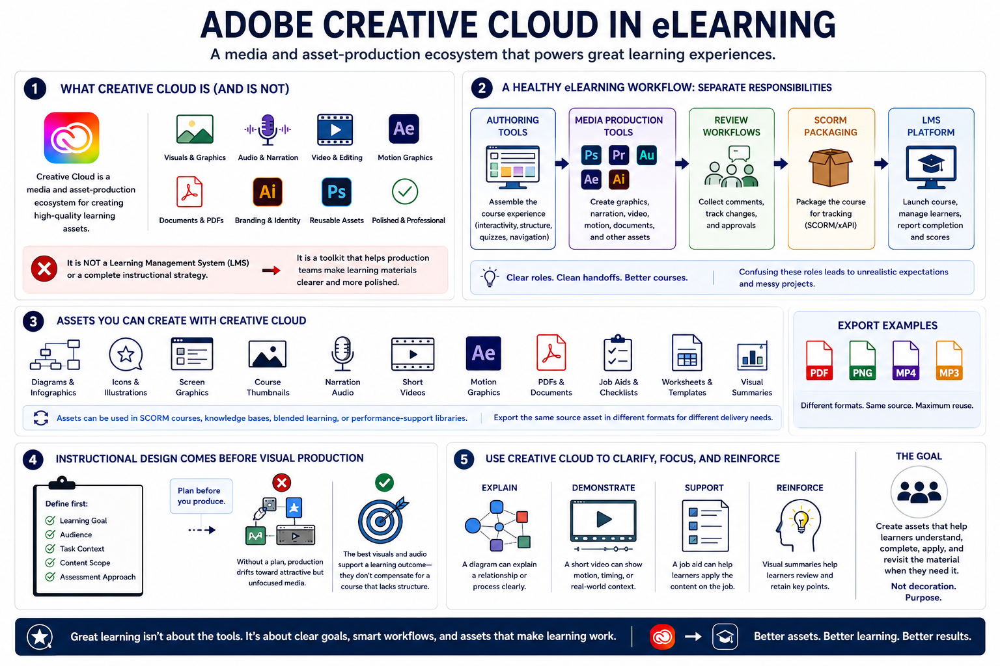

Adobe Creative Cloud in the eLearning Workflow
Connecting to LMS... Progress: in progress

Narration
Adobe Creative Cloud is useful in eLearning as a media and asset-production ecosystem. It can support the creation of visuals, audio, video, motion, documents, branding elements, and reusable design assets that eventually become part of a course. It is not, by itself, a learning management system or a complete instructional strategy. It is a toolkit that helps production teams make learning materials clearer and more polished.
A healthy eLearning workflow separates responsibilities. Authoring tools assemble the course experience. Media production tools create graphics, narration, video, and documents. Review workflows collect comments and approvals. SCORM packages package the course for tracking. LMS platforms launch the course, manage learner access, and report completion or score data. Confusing these roles can lead to unrealistic expectations and messy projects.
Creative Cloud assets can include diagrams, icons, screen graphics, course thumbnails, narration audio, short videos, motion graphics, PDFs, job aids, worksheets, and visual summaries. These assets may be used inside a SCORM course, a knowledge base, a blended learning program, or a performance-support library. The same source asset might also be exported in different formats for different delivery needs.
Instructional design should come before visual production. Before opening a design or editing tool, the team should know the learning goal, audience, task context, content scope, and assessment approach. Without that plan, production can drift toward attractive but unfocused media. The best visuals and audio support a learning outcome; they do not compensate for a course that lacks structure.
Use Creative Cloud to clarify, focus, and reinforce. A diagram can explain a relationship. A short video can demonstrate motion or timing. A job aid can help learners after the course is complete. The goal is not decoration. The goal is to create assets that help learners understand, complete, apply, and revisit the material when they need it.